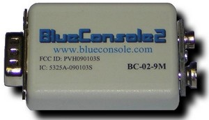
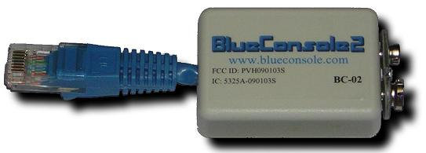

Questions? Comments? Additions? Email consoles at conserver.com.
(Don't harvest my address, I don't want SPAM!)
How does he do it? And Why?
|
|
www.conserver.com |
This page is a secondary repository for files related to the BlueConsole website, with the permission of the father of the products, Larry Cooke.
I found that the main BlueConsole website was offline in May 2008. I don't know how long it has been off-line. While you can expect the BlueConsole.com URLs here to fail, I have 'local' URLs for the document files and firmware on this website. I expect that Larry has sold his last units, so don't expect the commerce links to work. But, if you can find any on eBay, or via other means, the rest of these links may prove useful. -Zonker-
Jump to: Downloads - News - OEM - Contact - Bluetooth Info
Reviews
|  |
|  |
Serial Port Terminal Emulation Applications I used the free version of TriConnect software using a Treo650. I found that the 'return' key sent two new-line characters, which made it nearly impossible to log into devices. I sent email to ask if the for-pay version suffered from the same trouble, but I never got a response from them. Your mileage may vary. -Z-) |
30
June 2007 - BlueConsole Releases New Hardware and Software Features
BlueConsole announces support for several
new features on our Bluetooth Serial Adapter Products.
Support has been added for both the SPP and DUN Bluetooth profiles on
all BlueConsole products. The DUN profile is useful for
Bluetooth TCP-IP/Internet Access through a Serial Port. We
also released two hardware enhancements on all shipping DB9 Adapter
products: RS232 support for up to 230Kbs, and LEDs for
Monitoring RS232 Tx, Rx, and Bluetooth Connection Status.
22
January 2007 - BlueConsole
Introduces "Bluetooth SPP Repeater" Function
BlueConsole releases firmware to support a
"Bluetooth Repeater" function on BlueConsole2 products.
Repeater mode allows customers to extend the operating distance of a
standard Class 1 Bluetooth connection using a totally self-contained
battery-powered Bluetooth Repeater. Use cases include a
Bluetooth Repeater extension between two PC/PDA devices, extending the
Bluetooth distance from a PC/PDA to an RS232 device, or extending the
distance of two BlueConsole adapters configured for Cable
Replacement. See the Application Note: "Bluetooth Repeater"
for more details.
7
December 2006 - BlueConsole
Releases a DB9 Product Offering
BlueConsole announces a direct DB9 version
of the popular BlueConsole2 inline powered Bluetooth Serial
Adapter. This new product shares the same features and
benefits as the original BlueConsole2 with a standard DB9 RS232
connection. BlueConsole2 is the smallest Bluetooth Serial
Adapter on the market and the only one which can power itself from
existing RS232 hardware handshaking leads. It can also
optionally obtain power from Pin 9 or from a direct 9V battery
connection.
21
September 2006 - BlueConsole
becomes the only Bluetooth Serial Adapter with RS232
<BREAK> Support
BlueConsole announces version 3.7 firmware
for Blueconsole & BlueConsole2. This firmware
provides the ability to transmit a <BREAK> sequence to
your RS232 device. <BREAK> is often used to
interrupt an RS232 device for the purpose of password recovery or
loading new settings. BlueConsole is the only Bluetooth
Serial Adapter that provides RS232 <BREAK>
support. See the Application Note: Sending an RS232
<BREAK> for more details.
1
September 2006 -
BlueConsole Introduces GUI Config Utility
BlueConsole announces a new Windows GUI
Config Utility. This utility can be used to Read or Write
configuration settings to BlueConsole such as Baud Rate, PIN Code,
Discoverability, Device Name, etc. It can also be used to
restore BlueConsole to factory default settings. Customers
can now configure BlueConsole parameters either from the command line
or from this more convenient graphical interface.
Configuration can be performed via a directly connected COM port, or
over a Bluetooth radio connection.
22 August
2006 -
MultiPoint Forwarding Feature Introduced
BlueConsole announces new flash firmware
which
permits MultiPoint Forwarding. With this feature, up to 7
Client
devices can be simultaneously connected to BlueConsole and all interact
with the RS232 device. BlueConsole is the only Bluetooth
Serial
Adapter with the MultiPoint Forwarding feature. See the
MultiPoint
Forwarding Application Note for further details.
26 June
2006 - Network World Review gives
BlueConsole2 4.5 Stars:
Network World featured a review of
BlueConsole2 in their June 26, 2006 issue. "BlueConsole2 is especially
cool because it draws power from the serial port, which means you don't
need a power brick." One correction is that the article
refers to Bluetooth range as 30 feet. While true for a small
cell phone, BlueConsole2 is actually a Class 1 Bluetooth device with up
to 100m unobstructed range.
See the review here:
http://www.networkworld.com/columnists/2006/062606cooltools.html?page=2
21 June
2006 - BlueConsole2 Released:
BlueConsole introduces the second
generation Line Powered Bluetooth Serial adapter -
BlueConsole2. Building upon the success of the original
model, BlueConsole2 features both smaller size and lower power
operation. BlueConsole2 is 25% smaller and 25% lower power
than the original BlueConsole. BlueConsole2 is the only
totally wireless Bluetooth serial adapter powered directly from RS232
handshaking leads, without the need for AC adapters, batteries, or
special Pin 9 custom power.
18 May
2006 - Network
World Reviews BlueConsole:
Network World correspondent Joel Snyder
reviews two Bluetooth Serial adapters. The first reviewed
product requires a "power brick". "An astute
observer might notice this is not exactly wireless" Joel
says. He then reviews a true wireless serial
adapter, BlueConsole. "... very slick ... more elegant ...
definitely a cool tool." After using his Apple MacBook, Joel
even accesses a serial device from his Nokia cell phone with
BlueConsole. Watch the entire Network World video review here (includes
a brief NW advertisement):
http://www.networkworld.com/video/051506ct-rs232.html?tab=cool_tools
28
January 2006 - BlueConsole Released:
BlueConsole announces the first and only
"line powered" Bluetooth Serial solution. Eliminating the
need for serial cables, AC power bricks, or batteries, BlueConsole
obtains power directly from the existing RS232 handshaking
leads. Its small size and flexible connection options make it
a must have tool for engineers that work with telecommunications,
medical, industrial, or other RS232 equipment.
OEM
Customized OEM Solutions
BlueConsole offers customized solutions for OEM customers.
Benefits
Technical Support: support at blueconsole.com
|
NOTICE: Most of the pages, articles, and tutorials on this website are copyrighted works. You may make 'deep links' to various pages. (If you let me know which page(s) you are linking to, I'll let you know if I move the page(s) during updates.) Please send me email if you wish to republish any material, or use it on your own website. |